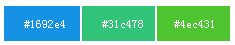
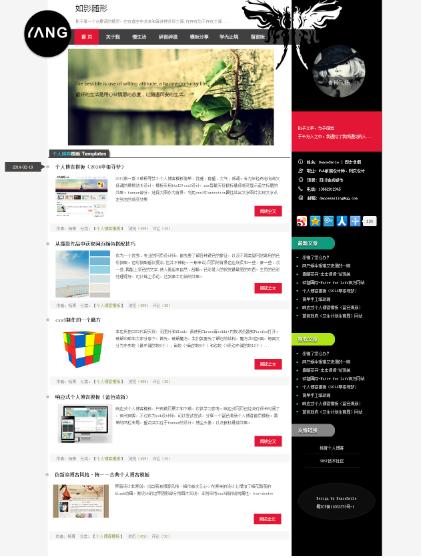
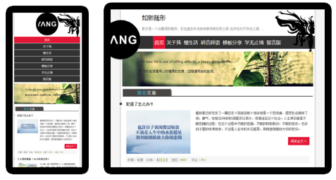
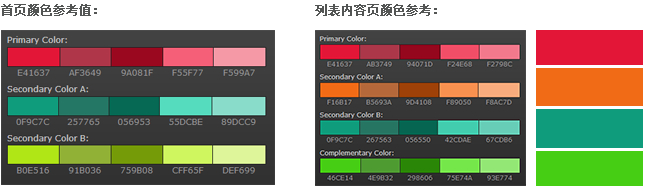

您现在的位置是：首页>模板分享>个人博客模板
黑色Html5个人博客模板主题《如影随形》
发布时间：2014-04-17编辑：杨青浏览（390）评论览（14）
2014第二版黑色Html5个人博客模板主题《如影随形》，如精灵般的影子会给人一种神秘的感觉。一张剪影图黑白搭配，如果整个网站用黑白灰三色，会显得比较太过沉重，于是，在选择亮色方面，用以红为主色，蓝为辅色。这样就铺上了一些神秘甚至有些俏皮的元素。
如果你更喜欢用蓝色或者绿色，这也不错，替换关键的颜色值就行了，推荐颜色值：
Html5响应式两栏布局，LOGO重点突出，首页推荐文章列表以Logo中轴线为时间轴，鼠标Hover触发时间轴左侧栏显示文章发布时间，文字banner动画均以css3代码来实现效果。
首页效果图：

移动设备和平板电脑浏览效果：


关键字词：黑色,个人博客,时间轴,响应式
上一篇：程序员应该如何高效的工作学习
下一篇：柴米油盐的生活才是真实